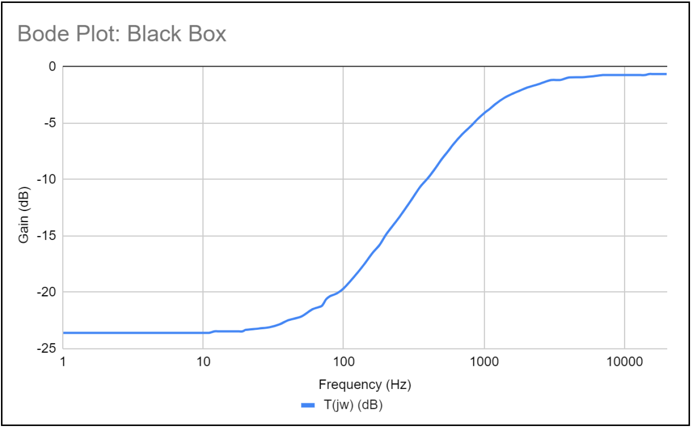
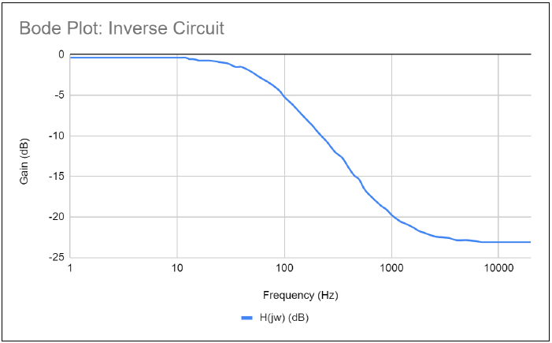
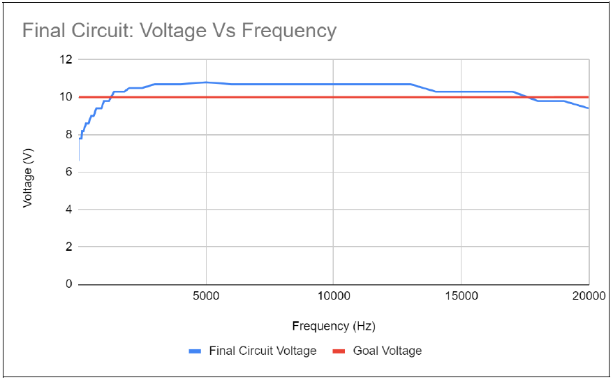
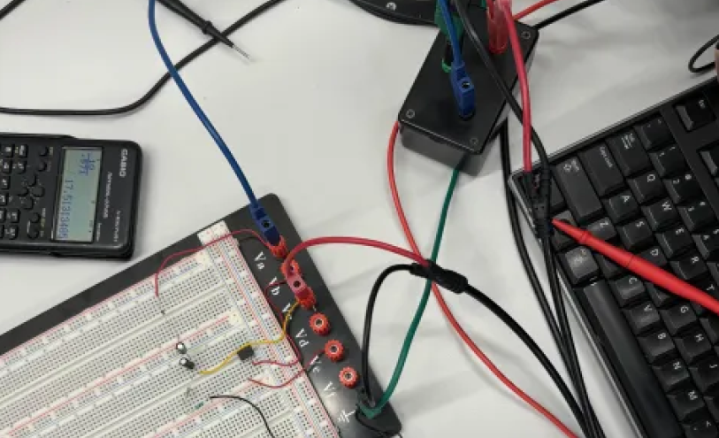
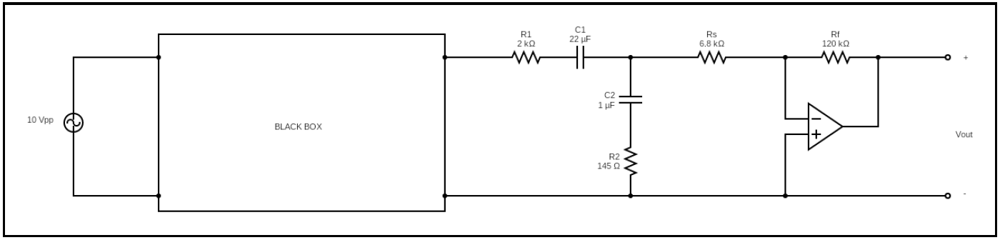

Black Box (Unknown circuit) frequency response
Measured an unknown circuit’s response and designed a stable inverse filter to recover the original signal.
In this assignment, we were tasked to take the voltage frequency response of an unkown black-box circuit and produce
an inverse circuit.
First, I calculated the transfer function of the black-box using calculus to then produce the inverse transfer function.
Once calculated, a corresponding circuit was designed using capacitors and resistors.
Lastly, the signal was amplified using an inverting amplifier.

Black Box (Unknown circuit) frequency response

Inverse Circuit frequency response

Final Voltage Bode Plot compared to goal voltage

Physical Circuit

Final Circuit Schematic